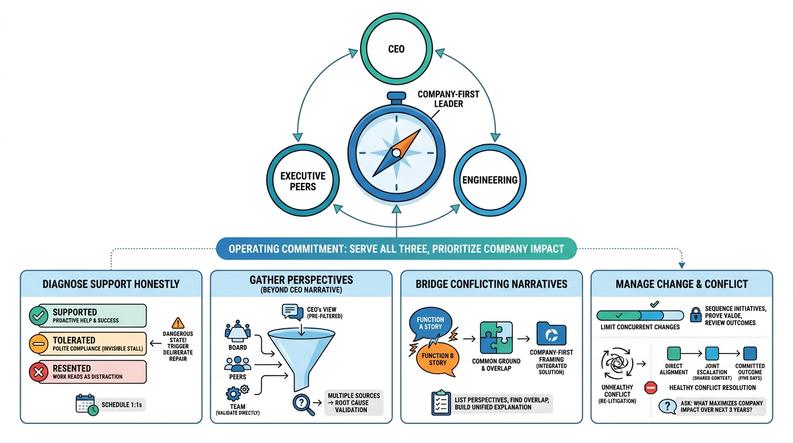

Working with Peers and the Business
Working with Your CEO, Peers, and Engineering

Image generated by Google Gemini (gemini-3-pro-image-preview)
Working with Peers and the Business

Image generated by Google Gemini (gemini-3-pro-image-preview)